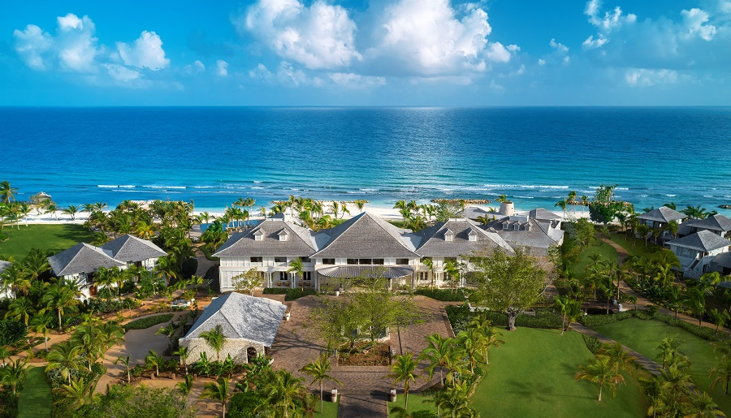

Bip-News
Updating news from all over the world
Delta reports $15.6bn loss for financial 2020
Delta Air Lines has reported a pre-tax loss of $15.6 billion for financial 2020, representing a loss per share of $19.49 on total revenue of $17.1 billion. In the December quarter alone, the carrier saw pre-tax losses of $1.1 billion. “Our December quarter results capped the toughest year in Delta’s history,” said Ed Bastian, Delta chief executive. “While our challenges continue in 2021, I am optimistic this will be a year of recovery and a turning point that results in an even stronger Delta returning to revenue growth, profitability and free cash generation.” Total operating expenses at Delta, which included $4.3 billion of Covid-19 related and other items, decreased $10.8 billion in 2020 over the prior year.
Half Moon, Jamaica
The first thing you notice as you arrive at Half Moon, driving through the manicured lawns and well-maintained tropical gardens, is the incredible ocean view. This is a delight which will consistently meet you throughout your visit to the venerable resort in Montego Bay. As you enter reception through the pavilion-style lobby, you are granted the luxury of checking-in while watching the ocean slowly welcome you not only to the hotel, but Jamaica too. After a long flight, it is always a pleasure to be met not only with the views over the ocean and the humbling Blue Mountains in the background, but also a rum cocktail, setting the tone for a remarkably pleasant trip.
Updating Beautiful Places:
| Place | Country | Bip-grade | Temperature |
|---|---|---|---|
| Paris | France | 8.3 | 11 deg |
| Dead Sea | Israel | 7.8 | 36 deg |
| Black Forest | Germany | 9/1 | 8 deg |
| Machu Pichu | South America | 9.7 | 12 deg |